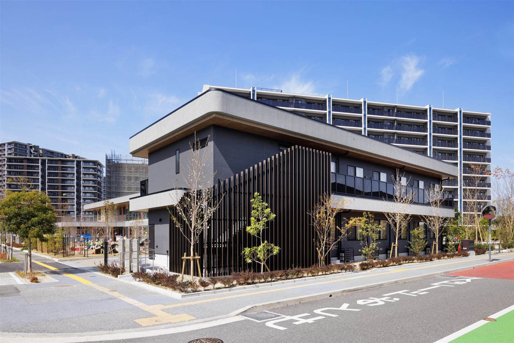

01SCHOOL
学校工事
小学校・中学校・高等学校の校舎や体育館を改修します。学校生活への影響に配慮して工事を進めます。
- 耐震改修
- 外壁改修
- 大規模改修
平成9年の創立以来、福岡市内の小学校・中学校・高等学校の耐震改修や外壁改修、保育園や福祉ホームの新築、団地や公共施設の解体まで、地域の暮らしに欠かせない建物に携わってきました。
一級建築士・一級建築施工管理技士など国家資格を持つ技術者が、設計の視点と現場管理の両面から、一つひとつの工事をていねいに進めます。
小学校・中学校・高等学校の校舎や体育館を改修します。学校生活への影響に配慮して工事を進めます。
保育園や福祉ホームなど、子どもや高齢の方が毎日過ごす施設を新築します。
団地や公共施設など、大規模な建物の解体工事にも対応します。
公営住宅や消防署の外壁改修、駅の高架下通路の改築など、公共建築の工事を行います。

福岡市東区・照葉（アイランドシティ）に建つ2階建ての福祉施設です。木目を生かした明るい共用スペースや、壁の色を部屋ごとに変えた個室など、入居される方が落ち着いて過ごせる内装に仕上げました。
大きく張り出した屋根の下に、木の柱と板張りの天井が続く園舎です。園舎の前には、ゆったりとした広い軒下が続きます。
市営住宅2棟の外壁を改修しました。高層の集合住宅の外壁全体を、きれいに塗り替えています。
お電話かフォームで
ご連絡ください。
担当者が伺い、建物と
ご要望を確認します。
工事内容と金額を
書面でご提示します。
有資格の技術者が
工程と安全を管理します。
仕上がりを一緒に
確認してお渡しします。
工事のご相談・お見積もりは、お電話・FAX・フォームから受け付けています。フォームは入力後「この内容で送信する」を押してください。担当者からご連絡します。
現在このフォームはお試し表示のため、内容は送信されていません。お手数ですが、お電話（092-725-7192）またはFAX（092-725-7193）でお問い合わせください。